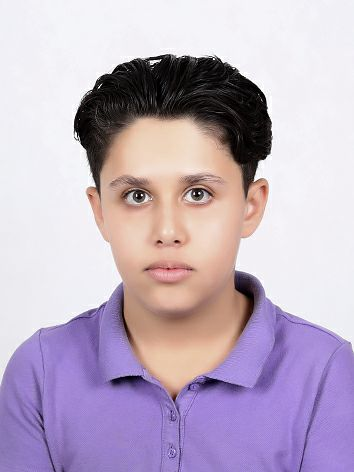
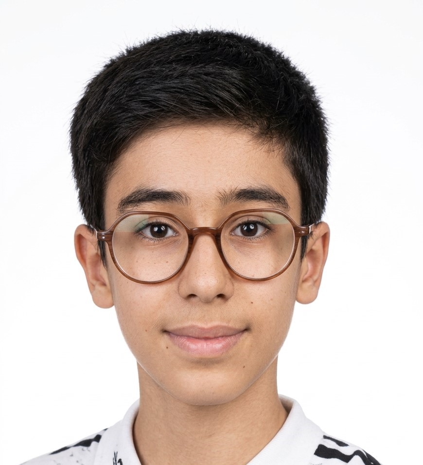

🌙 ماه هنوز «زلزله» دارد
لرزهسنجهایی که فضانوردان آپولو روی ماه گذاشتند، ماهلرزههای واقعی را ثبت کردند. بعضی از آنها بسیار طولانی بودند.
روی هر عکس بزنید تا توضیحاتش را ببینید
لرزهسنجهایی که فضانوردان آپولو روی ماه گذاشتند، ماهلرزههای واقعی را ثبت کردند. بعضی از آنها بسیار طولانی بودند.
زهره یک دور به دور خودش را در حدود ۲۴۳ روز زمینی میچرخد، ولی دور خورشید را در ۲۲۵ روز میگردد. یعنی روزش از سالش طولانیتر است و برعکس زمین میچرخد.
آهن خون و کلسیم استخوانهای شما در درون ستارهها و انفجار ابرنواخترها ساخته شده است. پس بخشی از بدن ما قبل از شکلگیری زمین، در آسمان ساخته شده است.
آموزشها، گزارشها و وبینارهای انجمن؛ از سیارههای دوخورشیدی تا سفر در زمان و تلسکوپ جیمز وب. همه در یک صفحه.
ورود به صفحهی ویدیوها ←نوا انجمنی دانشآموزی است برای کسانی که شبها سرشان را بالا میگیرند و میپرسند آن بالا چه خبر است. نام ما از «نوا» میآید؛ ستارهای که ناگهان روشن میشود و آسمان را غافلگیر میکند.
ما باور داریم نجوم فقط فرمول و کتاب نیست؛ یک تجربه است. تجربهی دیدن حلقههای زحل از پشت تلسکوپ، یا فهمیدن اینکه نوری که امشب به چشممان میرسد، سالها پیش راه افتاده است. نوا جایی است که این کنجکاوی کنار هم جمع میشود، پرسشها بیجواب نمیمانند و هر عضو میتواند چیزی بیاموزد و چیزی یاد بدهد.
«آسمان مدرسهای است که هیچوقت تعطیل نمیشود.»


✦ نوا، جایی برای رویاهای ستارهای...